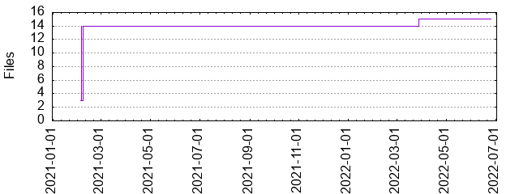

Files
General
Activity
Authors
Files
Lines
Tags
Total files
15
Total lines
68156
Average file size
175589.53 bytes
File count by date

Extensions
Extension
Files (%)
Lines (%)
Lines/file
2 (13.33%)
133 (0.20%)
66
js
1 (6.67%)
66101 (96.98%)
66101
json
4 (26.67%)
1613 (2.37%)
403
md
1 (6.67%)
49 (0.07%)
49
sh
1 (6.67%)
23 (0.03%)
23
ts
3 (20.00%)
171 (0.25%)
57
yml
3 (20.00%)
65 (0.10%)
21